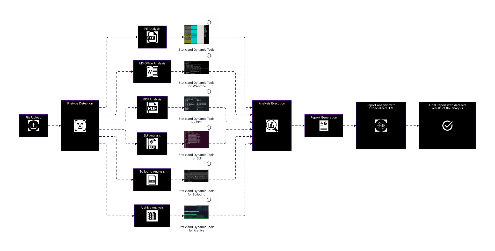

Welcome! In this post I introduce MAIAT (Malware Analysis & Intelligence Tool), a project I am building to automate malware analysis with AI. MAIAT streamlines triage, extracts actionable indicators, and produces structured, integration-ready reports—so teams can respond faster with greater confidence.
Key Features of MAIAT
- Automated static analysis: Extracts file hashes, strings, sections/metadata, imports/exports, and entropy.
- Dynamic analysis integration: Executes samples in isolated sandboxes to capture runtime behavior safely.
- AI-powered insights: ML/NLP models classify families, interpret intent, and surface anomalous behaviors.
- Comprehensive reporting: Generates detailed findings with MITRE ATT&CK mapping and clear, explainable reasoning.
- Seamless integration: Exports in STIX/TAXII, JSON, CSV, and Markdown for SIEM/CTI and ticketing systems.
How MAIAT works
The automated pipeline is modular and explainable, built to minimize manual effort and maximize fidelity of intelligence.
- Sample submission: Upload via web UI or API; ingest from feeds or watch-folders.
- Pre-processing: Integrity checks, file-type detection, metadata extraction, prioritization.
- Static analysis: Disassembly, string extraction, PE/ELF parsing, macros/scripts inspection.
- Dynamic analysis: Detonation in sandbox; system, network, and registry activity logging.
- AI analysis: Behavioral summarization, family classification, anomaly and evasion detection.
- Report generation: IoCs, behavioral timeline, ATT&CK mapping, and integration-ready outputs.
MAIAT in action: watch the demo
See the full workflow—from ingestion to intelligence—in a short, narrated demo.
Visual workflow overview
An animated diagram illustrates each stage. Every step is independently testable yet seamlessly orchestrated end-to-end.

- Ingest & triage: Auto-classification, priority scoring, and queueing.
- Static & dynamic: Deep file inspection and sandboxed execution with rich telemetry.
- Behavior & intelligence: ML/NLP models interpret intent and extract a behavioral timeline.
- Attribution & reporting: ATT&CK mapping and structured outputs for downstream systems.
Format-specific analysis modules
MAIAT tailors analysis to file type while unifying results in a consistent schema.
PE (EXE)
- Static: Imports/exports, resources, sections/entropy, signatures, packer detection.
- Dynamic: Process tree, registry and file I/O, network calls, persistence mechanisms.
- Insights: Family hints (e.g., loaders, stealers), evasion patterns, capability flags.
ELF
- Static: Symbols, sections, linkage, syscalls, hardcoded endpoints.
- Dynamic: Process behavior, network telemetry, privilege/escalation attempts.
- Insights: Linux/macOS targeting, lateral movement, implant-style behaviors.
- Static: Object tree parsing, JavaScript streams, embedded files, suspicious actions.
- Dynamic: Detonation with reader instrumentation, exploit chain observation.
- Insights: Phishing lures, dropper behavior, CVE-pattern heuristics.
MS Office
- Static: Macro extraction, obfuscation layers, DDE/URLs, COM abuse.
- Dynamic: Macro execution tracing, spawned processes, network beacons.
- Insights: Delivery chains, LOLBAS usage, payload staging.
Scripts
- Static: Syntax and AST features, encodings, indicators, anti-analysis checks.
- Dynamic: Constrained execution, command tracing, API call logging.
- Insights: TTP alignment, obfuscation families, operator tradecraft.
Archives
- Static: Recursive unpacking, embedded indicators, nesting/entropy anomalies.
- Dynamic: Conditional extraction behavior, script runners, dropper chains.
- Insights: Multi-stage delivery, overlap with known campaigns, lure taxonomy.
Sample report preview
Reports are structured, explainable, and ready for automation. Below is a compact Markdown/JSON excerpt.
# Summary
- Family: SuspiciousLoader
- Risk: High
- ATT&CK: T1059 (Command and Scripting), T1055 (Process Injection)
## Indicators of Compromise
- SHA256: 4d8f...c2a1
- Domains: api.example-sync[.]com
- IPs: 185.199.110.153
## Behavioral Timeline
- t+00:02: Writes payload to %APPDATA%
- t+00:04: Spawns child process with hollowing
- t+00:07: Beacons over HTTPS with JA3 72a589da
{
"iocs": {"hashes": ["4d8f...c2a1"], "domains": ["api.example-sync.com"], "ips": ["185.199.110.153"]},
"attack": ["T1059","T1055"],
"risk": "high",
"explainability": "Process hollowing evidenced by RWX allocation and unbacked section mapping."
}
Considerations and roadmap
- Sandbox evasion: Anti-evasion and environment simulation reduce blind spots, with flags for suspected evasive behavior.
- Data and learning: Performance improves with diverse samples; continuous training enables resilience to novel TTPs.
- Human-in-the-loop: MAIAT augments analysts and fits within a layered defense strategy.
- Adaptive learning: Reinforcement learning to better generalize to emerging techniques.
- Collaborative defense: Privacy-conscious threat sharing with industry groups (e.g., ISACs).
- Multi-agent orchestration: Coordinated response across security tools—toward an autonomous “sentinel”.
Get involved
Have feedback, datasets, or integration requests? I’d love to hear from you. You can reach me at alex.sciarra@gmail.com.